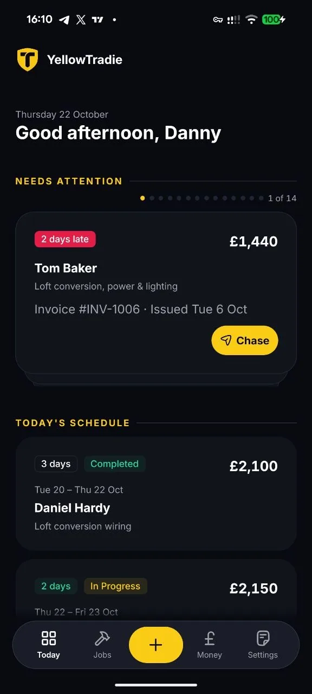
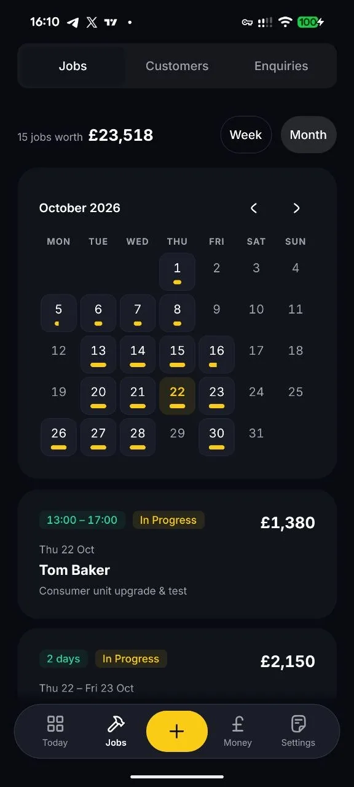
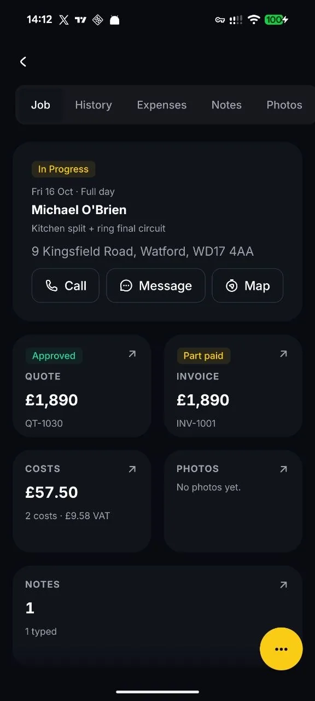
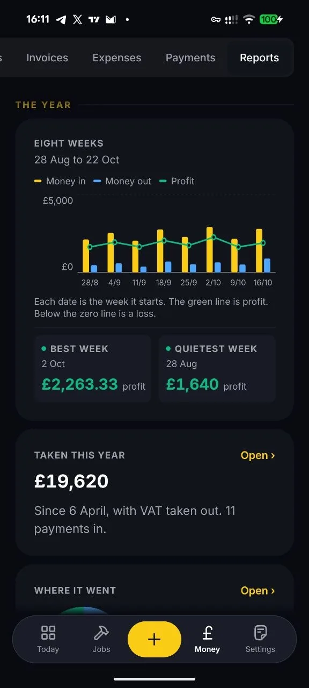

The No-Bullshit app for UK Tradesmen.
YellowTradie takes the message when you miss the call, sends your quotes, chases your invoices and sorts your tax, so your evenings are your own.
Sound familiar?
| The Old Way | The YellowTradie Way |
|---|---|
| Phone rings while you're up a ladder. You miss it. They ring someone else. | The message is taken and sent to you, filtered: the good jobs flagged, the time-wasters binned. |
| 9pm at the kitchen table, writing up quotes. | Say it into your phone in the van. Done. |
| Chasing a customer for money you've already earned. | One tap sends the reminder. Awkward call avoided. |
| Receipts in a shoebox. Tax deadline in a panic. | Everything logged as you go. Tax reports ready when you are. |
| Weekends spent catching up on admin. | Weekends spent doing whatever you like. |
From first call to tax return, handled.
Lead
The customer rings and you miss it. The message is taken, filtered and sent to you, so you only call back the ones worth your time.Quote
Speak it, send it. No typing on a tiny screen.Job
Booked into your diary automatically. You always know where you're headed next.Invoice
Ready the moment the job's done. Overdue? One tap to nudge them.Tax
Every invoice and expense already logged, so quarterly returns stop being a nightmare.What it looks like on the phone
Four screens from the app, taken on the phone. Nothing on them is a drawing, and the names and jobs are sample data.

Today
The late money comes first
Two days after its date, the invoice is already the first card, with Chase on it. Today's job sits under it with its time and where it stands.

Jobs
What you have on, and what it's worth
Every job in one list, with the month's calendar above it and the month's total at the top. You can see what is booked before you say yes to more.

The job
One job, the whole of it
The quote, the invoice and what it cost you, on the page for that job. Call, message or get directions without leaving it.

Reports
The year so far, week by week
Eight weeks of what came in and what went out, with the profit line through them and the best and quietest weeks named. What you have taken since April is under it, with VAT already out of the figures.

-
Never Miss a Lead
When your hands are full the message is taken, the spam and tyre-kickers are weeded out, and the ones that matter come to you as a transcript. If someone hangs up without leaving a message, we text them to say you're on a job and will ring back, so they wait for you instead of ringing the next bloke.
-
Admin on Autopilot
Talk to the app like you'd talk to an office manager. "New customer, Mrs Patel, boiler service, Thursday" and it's done: customer created, job booked, diary updated. Do your admin between jobs and leave the typing to us.
-
Get Paid Faster
Chasing money is awkward. Let the app do it. It tracks every outstanding quote and overdue invoice and lets you send a polite payment reminder with one tap.
-
Tax-Time Sorted
Every expense and invoice is logged as you go, so there's no shoebox and no end-of-quarter scramble. When it's time to file, your figures are already there.
Quick sum
What a missed call costs you
Two sliders. Your numbers, not ours. Whatever comes out, that is the year you are having right now.
That is about £7,800 a year in jobs that went to whoever picked up first.
Your two numbers, worked out over 52 weeks. See the full calculator with tables.
Start free trialYou didn't go self-employed to sit at a laptop at 10pm.
Get the paperwork off your plate and your evenings back. Spend them with your family, your mates, or your feet up.